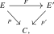
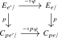
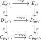
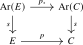
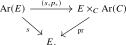

Straightening turns global questions about cocartesian fibrations into pointwise questions about their fibers. This section develops the resulting fiberwise criteria for equivalences, distinguished objects, cocartesian morphisms, and left fibrations.
Theorem 23.3.1. Consider a cocartesian functor

where \(p\) and \(p'\) are cocartesian fibrations between small \(\infty \)-categories. Then \(F\) is an equivalence of \(\infty \)-categories if and only if for every object \(x\) of \(C\), the induced functor on fibers \(F_x\colon E_x \to E'_x\) is an equivalence.
Proof. Under the equivalence \(\Str ^{\cc }\colon \Cocart (C) \iso \Fun (C,\Cat _{\infty })\), \(F\) corresponds to a natural transformation \(\Str ^{\cc }(F)\colon \Str ^{\cc }(p) \to \Str ^{\cc }(p')\), and this natural transformation is a natural equivalence if and only if it is a pointwise equivalence. □
Corollary 23.3.2. A cocartesian fibration \(p\colon E \to C\) is an equivalence if and only if all of its fibers are contractible.
Proof. Apply the previous theorem to \(E' = C\). □
Corollary 23.3.3. A morphism of animae \(p\colon X \to Y\) is an equivalence if and only if all its fibers are contractible.
Proof. Since \(X\) is an anima, every morphism in \(X\) is an isomorphism, and in particular \(p\)-cocartesian. It follows that \(p\) is a left fibration, and thus the claim holds by the previous corollary. □
Proposition 23.3.4 (Fiberwise initial objects in cartesian fibrations, [Lurie (2009), Proposition 2.4.4.9]). Let \(p\colon E \to C\) be a cartesian fibration whose fibers admit initial objects. Then the fiberwise initial objects assemble uniquely into a fully faithful left-adjoint section \[ s\colon C \to E \] of \(p\). Dually, the fiberwise terminal objects of a cocartesian fibration assemble uniquely into a fully faithful right-adjoint section.
Proof. For every \(x\in C\), choose an initial object \(e_x\in E_x\). We claim that \(e_x\), together with the identity morphism \(x\to p(e_x)=x\), is a left adjoint object to \(x\) under \(p\). Indeed, for any \(e\in E\) consider the map \[ \Hom _E(e_x,e)\longrightarrow \Hom _C(x,p(e)). \] For a morphism \(f\colon x\to p(e)\), choose a \(p\)-cartesian lift \(f^*e\to e\). The defining property of this lift identifies the fiber of the displayed map over \(f\) with \[ \Hom _{E_x}(e_x,f^*e), \] which is contractible because \(e_x\) is initial. It follows from Corollary 23.3.3 that \(\Hom _E(e_x,e)\to \Hom _C(x,p(e))\) is an equivalence. This proves the claim.
The pointwise criterion for adjunctions from Lemma 21.1.4 now assembles the objects \(e_x\) and the identity morphisms \(x\to p(e_x)\) into a left adjoint \(s\colon C\to E\) whose unit \(\id _C\to ps\) is a natural isomorphism. Hence \(s\) is a fully faithful section of \(p\). Any other section selecting initial objects in the fibers is a left adjoint to \(p\) by the same argument, and is therefore unique. The final statement follows by duality. □
Lemma 23.3.5. Let \(p\colon E \to C\) be a functor. Then a morphism \(\phi \colon e \to e'\) in \(E\) is \(p\)-cocartesian if and only if the commutative square

is a pullback square. A dual criterion holds for \(p\)-cartesian morphisms.
Proof. The horizontal maps are left fibrations, hence in particular cocartesian fibrations. It follows from closure under base change that also the map from the pullback to \(E_{e/}\) is a cocartesian fibration. By Theorem 23.3.1, the functor \(E_{e'/} \to E_{e/} \times _{C_{pe/}} C_{pe'/}\) is an equivalence if and only if this holds fiberwise over \(E_{e/}\), which means that for every morphism \(\psi \colon e \to e''\) the map \[ \Hom _{E_{e/}}(\phi , \psi ) \to \Hom _{C_{pe/}}(p\phi , p\psi ) \] is an equivalence. Since this is a morphism of animae, this may be checked fiberwise, where it precisely becomes the definition of cocartesianness for \(\phi \). □
Lemma 23.3.6. Let \(q\colon E \to D\) and \(p\colon D \to C\) be functors and assume that \(p\) is a left fibration. Then \(q\) is a left fibration if and only if \(pq\) is a left fibration.
Proof. As a consequence of Lemma 23.3.5, we see that a morphism \(\phi \colon e \to e'\) in \(E\) is \(q\)-cocartesian if and only if it is \(pq\)-cocartesian: in the commutative diagram

the bottom square is a pullback square, hence the top square is a pullback square if and only if the bottom one is. It follows that every morphism in \(E\) is \(q\)-cocartesian if and only if every morphism is \(pq\)-cocartesian. The claim follows. □
Proposition 23.3.7. For a functor \(p\colon E \to C\), the following conditions are equivalent:
- (1)
-
The functor \(p\) is a left fibration;
- (2)
-
For every object \(e\) of \(E\), the induced functor \(p\colon E_{e/} \to C_{pe/}\) is an equivalence;
- (3)
-
The commutative square

is a pullback square.
Proof. For \((1) \Rightarrow (2)\), assume that \(p\) is a left fibration. Since \(E_{e/} \to E\) and \(C_{pe/} \to C\) are left fibrations as well, it follows from Lemma 23.3.6 that also \(E_{e/} \to C_{pe/}\) is a left fibration, hence it is an equivalence if and only if each of its fibers is contractible. But the fiber over \(f \in C_{pe/}\) is the anima \(L(e,f)\) of \(p\)-cocartesian lifts of \(f\) starting in \(e\), hence this is contractible by Lemma 23.1.7.
For \((2) \Rightarrow (1)\), first note that it follows from (2) that every morphism \(pe \to c'\) has a lift to some morphism \(e \to e'\). It remains to show that every morphism \(\phi \colon e \to e'\) in \(E\) is \(p\)-cocartesian. But this is a direct consequence of Lemma 23.3.5: the two vertical maps in the square are equivalences, hence the square is a pullback square.
For \((2) \iff (3)\), note that the square is a pullback square if and only if the horizontal map in the following diagram is an equivalence:

By the dual of Example 23.1.10, the two vertical functors are cartesian fibrations. In light of Theorem 23.3.1, the horizontal functor is an equivalence if and only if it induces equivalences on fibers over each object \(e \in E\). Unwinding definitions, these functors on fibers are precisely the functors \(E_{e/} \to C_{pe/}\) from condition (2). □
Generated from the authoritative LaTeX source.